Maguro ヘルプ
バージョン 0.2.3 · Windows · このサイトはライトテーマ
概要
Maguro は、Windows 向けのマルチペイン ファイル マネージャーです。各ペインは本物のエクスプローラーのビューです。右クリックメニュー、ドラッグ アンド ドロップ、サムネイル、Windows のコピー ダイアログが、そのまま使えます。
新規インストールでは、ペインひとつで開きます。別のプログラムを使わずにコピー、移動、比較したいときは、ペインを追加できます。最大は 4×4 の格子で 16 ペインです。
Maguro は、efww による efww/grids のフォークです。実行ファイル名（maguro.exe）、ウィンドウ クラス、設定フォルダー、ホットキー（Win+Shift+E）は、独自のものです。
スタート メニュー、またはコマンド ラインから起動します。maguro.exe C:\Work D:\Archive は、それらのフォルダーを開きます。.maguro ファイルは、保存したセッションを開きます。.grids、.qdr、grids.ini はセッション ファイルではなく、インポートもされません。
F1 は、ブラウザーでこのヘルプを開きます。Ctrl+/ は、アプリ内の短いショートカット一覧を開きます。Ctrl+, は、設定を開きます。
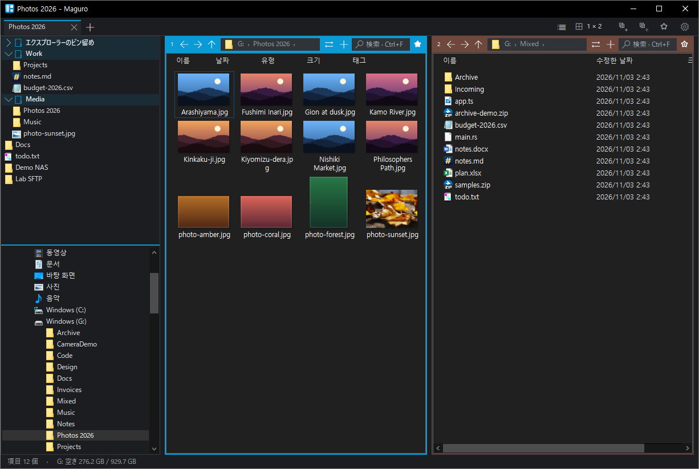
アドレス バーとツール バー
キーは ショートカット に、一度だけ載せています。
アドレス バーは、現在のフォルダーです。パスの名前をクリックすると、そこへ移動します。山括弧をクリックすると、中のフォルダーが一覧されます。現在のフォルダーか、バーの空いている部分をクリックするか、アドレス バーのショートカット（Ctrl+L、Alt+D、または F4）で、パスを入力します。
ツール バーには、レイアウト、保存、セッションを開く、お気に入りがあります。ドライブ文字は、タブ列に置けます。ウィンドウが狭いときは、後ろの文字から先に隠れます。設定 → 外観では、ツール バー、ドライブ ボタン、ステータス バーを隠せます。
タブ列の歯車が設定メニューを開きます。ツール バーを隠しても歯車は残ります。区切りでグループに分かれます。このタブを保存、セッションを開く、ワークスペース。次にファイルバスケット、最近使ったファイル、エクスプローラーのウィンドウからフォルダーを開く、フォルダー監視、そして該当するときの WinMerge。次に表示（隠しファイルを表示、ファイルの拡張子を表示、左のパネル、プレビュー ウィンドウ）、外観（ライト テーマまたはダーク テーマ、Windows のライト / ダークに合わせる、選択色、言語）、動作（空白をダブルクリック: 上のフォルダー、どこからでも Maguro を前面に）。最後は設定、ショートカット キー、ヘルプ、Maguro のバージョン情報です。フォルダーに表示は、このメニューにはありません。最近使ったファイルの右クリックメニューに残り、Ctrl+Enter も同じです。
ステータス バーは、選択している項目の数と、空き容量を表示します。
⇄ ボタンは、選択したフォルダー（または現在のフォルダー）を別のペインで開き、このペインの列、並べ替え、表示を保ちます。ファイルが選択されているときは、そこへコピーまたは移動します。上限は 10,000 です。ペインがひとつのときは、左右に分割します。何も選択していないとき、またはフォルダーがなくファイルだけが選択されているときは、現在のフォルダーを複製し、それらのファイルはコピーしません。
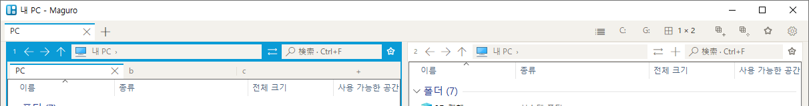
レイアウトとペイン
キーは ショートカット に、一度だけ載せています。
ペインは、フォルダーひとつです。レイアウトをクリックすると、均等な格子になります。その選択画面で押したままドラッグすると、各列の行数を決められます。方向キーと Enter も使えます。
スプリッターをドラッグすると、サイズが変わります。スプリッターをダブルクリックすると、均等に分割します。上限は、列 4、1 列の行 4、ペイン 16 です。赤いドロップ プレビューは、そのレイアウトが上限を超えるという意味です。
Ctrl+Shift+M、またはペイン ヘッダーのダブルクリックで、そのペインを最大化します。もう一度行うと、元に戻ります。
設定 → 一般 → 既定のレイアウトは、新しいタブ、新しいウィンドウ、初回起動のレイアウトです。新規インストールは、ペインひとつです。レイアウトを一度も保存していない古い maguro.json は、今も左右に二つのペインで開きます。別の起動から渡されたパスは、今もペインひとつのタブで開きます。保存した .maguro ファイルは、そのファイルに保存されたレイアウトを保ちます。
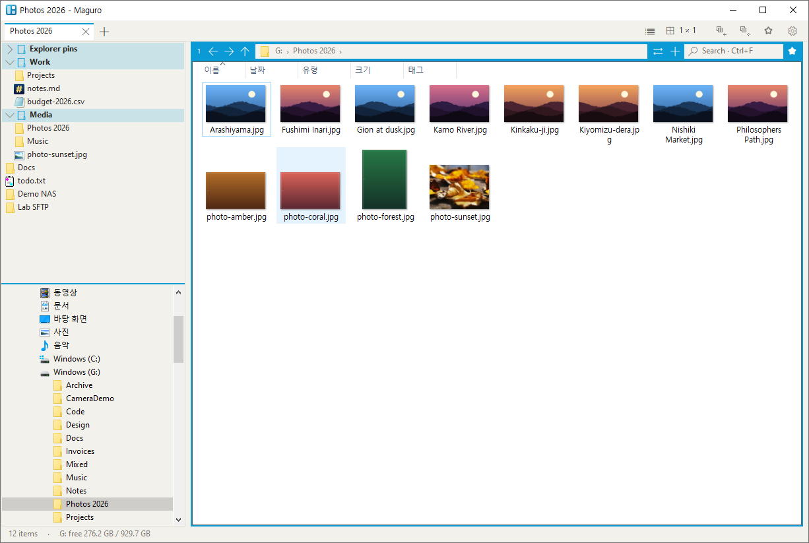
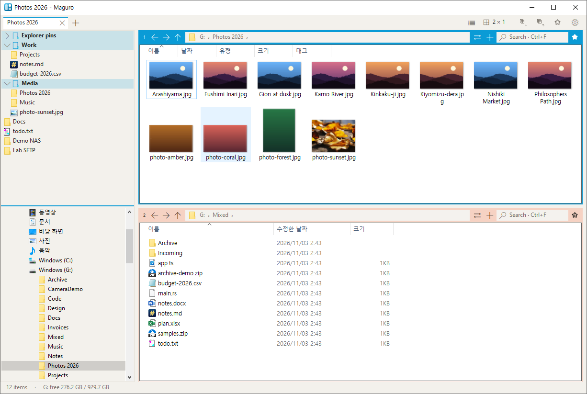
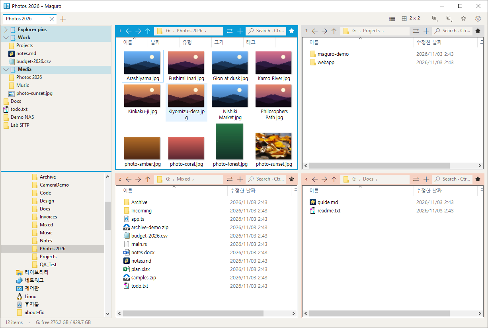
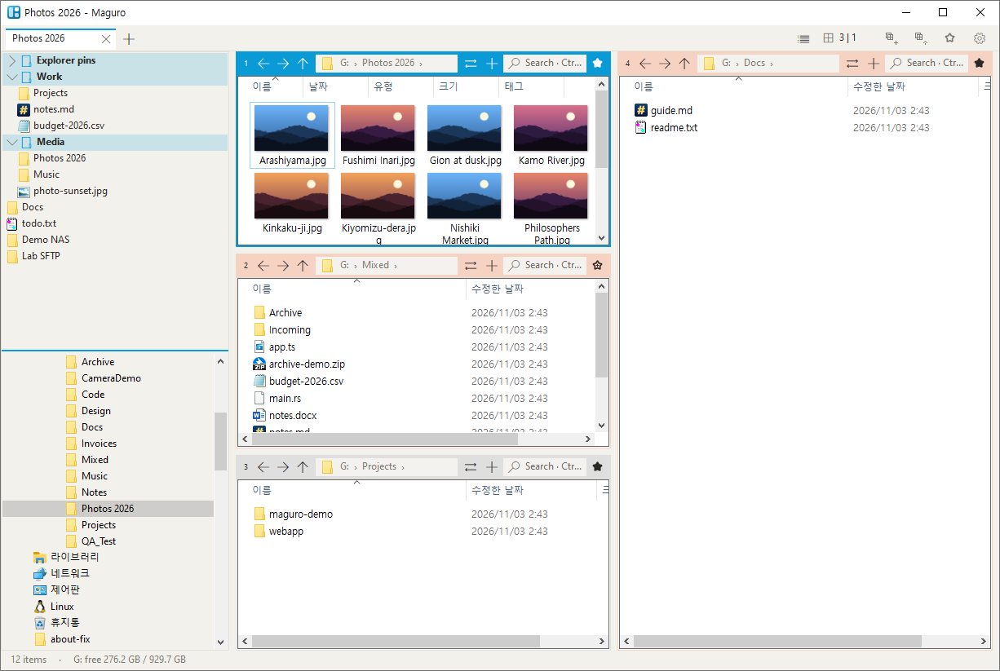
ペインの移動と複製
ペインは、番号のバッジかヘッダーをドラッグして動かします。
端にドロップすると、対象のペインを分割します。中央にドロップすると、位置を入れ替えます。ドラッグ中に Ctrl を押したままにすると、現在のペイン タブをコピーします。端では分割してこのペインを残し、中央ではそのマスにペイン タブを追加します。Ctrl を離すと、コピーではなく移動になります。
同じ操作は、キーボードでもできます。Alt+Shift+方向キーはフォーカスを隣へ移し、Ctrl+Alt+Shift+方向キーはその隣と入れ替えます。
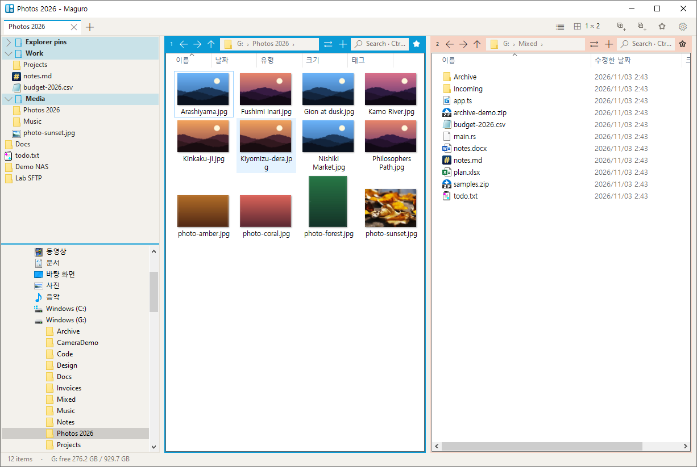
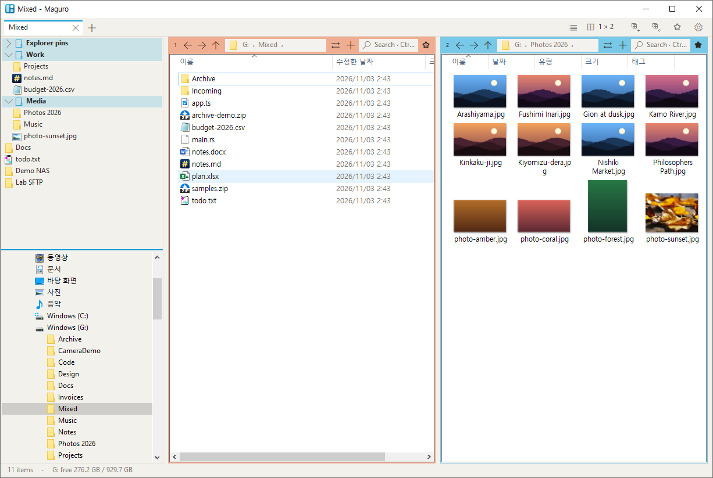
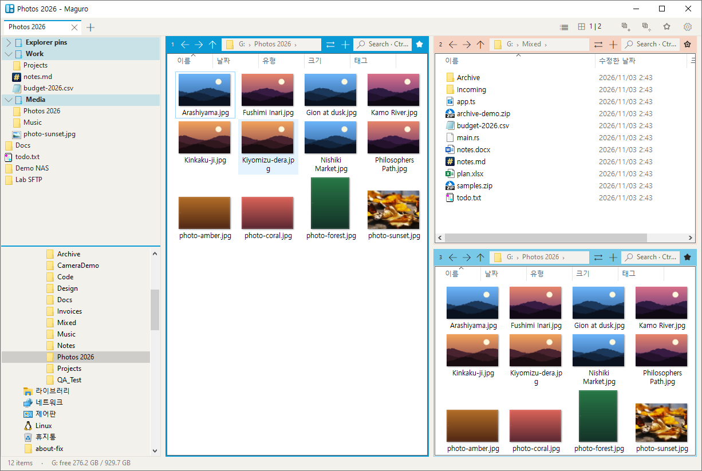
ウィンドウ タブとセッション
キーは ショートカット に、一度だけ載せています。
ウィンドウ タブは、レイアウト全体を持ちます。ペイン、フォルダー、表示、列、フィルター、ロック、色ラベルです。タブの名前は、名前を変えるまで、アクティブなフォルダーに従います。タブを右クリックすると、名前の変更、ロック、複製、新しいウィンドウへ移動、保存、色付け、タブ一覧を開けます。ロックしたタブは、ほかのタブを閉じるときも、すべてのタブを閉じるときも残ります。
Ctrl+T は新しいタブを開きます。Ctrl+W は現在のタブを閉じます。Ctrl+Shift+T は閉じたタブを開き直します。Ctrl+Alt+K はタブを複製します。Ctrl+Tab と Ctrl+Shift+Tab は、タブを切り替えます。
保存（Ctrl+S）は、このタブを書き込みます。一度も保存していないタブは、名前を尋ねます。保存ボタンの緑の点は、このタブのレイアウトが未保存という意味です。通常のファイルのコピーでは、その点は点灯しません。設定 → セッションでは、点をオフにでき、終了時にセッションを保存することもできます。終了時の保存が書き込めるよう、ウィンドウの閉じるボタンで閉じてください。
セッションを開くは、保存したタブを現在のタブの隣に開きます。複数のファイルを開くと、それぞれが自分のタブになります。
名前付きセッションは、.maguro ファイルだけです。設定ファイルの隣の maguro-sessions にあります（%APPDATA%\Maguro\maguro-sessions、ポータブル モードでは exe の隣）。ファイルには、レイアウト、ペインのパス、表示、列、色合い、ペイン タブ、ウィンドウ タブが入ります。お気に入り、ファイルバスケット、右クリックメニューの選択は入りません。それらは maguro.json に残ります。
Maguro は、.grids、.qdr、grids.ini をインポートしません。コマンド ラインで old.qdr を渡しても、セッションは開きません。設定 → 詳細では、Maguro の maguro.json、または Maguro 自身の古い ini テキストをインポートできます。その ini は Maguro のものであり、grids のファイルではありません。
Ctrl+N は、単一ウィンドウモードがオフのとき、別のウィンドウを開きます。新規インストールでは、そのモードはオンです。後からの起動、Ctrl+N、タブ列からタブをドラッグして外す操作、新しいウィンドウへ移動は、このウィンドウにタブを開きます。単一インスタンスも既定でオンで、後からの起動をこのプロセスに留めます。
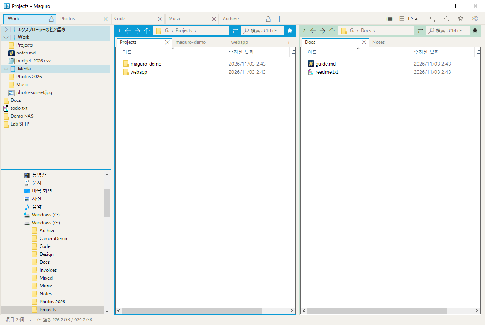
タブ一覧
Ctrl+Shift+L は、このウィンドウのタブ一覧を開きます。すでに開いていれば、閉じます。タブ列の右端にある一覧ボタンも、同じです。タブの右クリックメニューの タブ一覧… は、それを開くか、すでに開いていればそこにフォーカスします。Esc または閉じるで、消えます。
一行が、ウィンドウ タブひとつです。列は、タブ名、レイアウト（たとえば 2×2、列が異なるときは 2 | 3）、ペイン数、各ペインのフォルダーのチップです。現在のタブには、セルリアンのバーが付きます。ロックしたタブは、ロックを表示します。
フィルターは、大文字と小文字を区別せず、タブ名、フォルダーの表示名、またはフルパスに一致します。案内は「タブ名またはフォルダーで絞り込み」です。フォルダーのチップにカーソルを置くと、チップの下のツールチップにフルパスが出ます。PC の項目は、シェルの識別子ではなく、その言語に合わせた名前で出ます。
F2 は、選択したタブの名前をその場で変更します。Enter は新しい名前を残します。Esc は取り消します。テキストを変えずに離れると、自動のフォルダー名は固定されません。空の名前、または数字だけの名前は、カスタムのタイトルを消し、タブは再びフォルダーに従います。カスタムの名前は、80 文字まで保たれます。
Enter、移動ボタン、またはダブルクリックで、そのタブに切り替わり、一覧が閉じます。フィルター欄にフォーカスがあり、空でないとき、Del はフィルターを消します。それ以外では、そのタブを閉じてよいときに限り、選択したタブを閉じます。
フッターはタブの数を数え、Enter は移動、F2 は名前の変更、Del はタブを閉じる、Esc はウィンドウを閉じる、と知らせます。
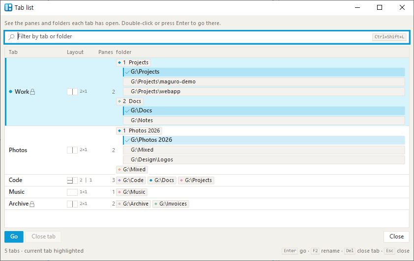
ペイン タブ
キーは ショートカット に、一度だけ載せています。
ペイン タブは、ひとつのペインの中の追加フォルダーです。ウィンドウ タブではありません。フォルダーがひとつのとき、タブ列は隠れたままです。⇄ の隣のボタンが、ペイン タブを追加します。
中クリック、または小さな閉じる印で、ペイン タブを閉じます。Ctrl+Alt+T、Ctrl+Alt+W、Ctrl+Alt+Page Down、Ctrl+Alt+Page Up は、ペイン タブの作成、閉じる、移動です。この四つは、フォーカスがペインにあるときだけ動くので、ウィンドウ タブのショートカットを奪いません。
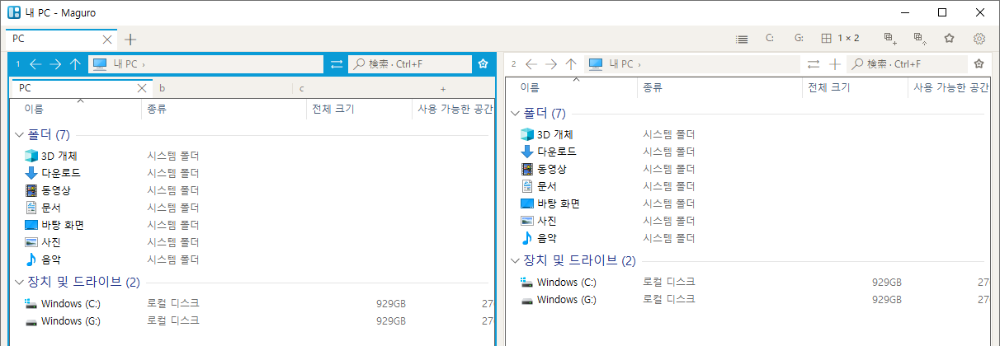
ペインの色
ペイン ヘッダーを右クリックすると、色ラベルを設定できます。ラベルはセッションと一緒に保存され、ウィンドウ タブの色とは別です。
六つの色見本は、空、グレー、ラベンダー、セージ、ピーチ、ローズです。ライトとダークは、それぞれ独自の濃淡を持ちます。これはペインのラベルであり、ウィンドウのアクセントではありません。アクセントは既定でセルリアン #0A9BD6 で、設定 → 外観で設定します。

お気に入りとフォルダー ツリー
キーは ショートカット に、一度だけ載せています。
お気に入りとフォルダー ツリーは、左のパネルを共有します。間の区切りをドラッグします。設定 → ペインと表示で、どちらを上にするかを選びます。既定は、お気に入りが上です。Ctrl+Shift+E は、パネル全体の表示と非表示を切り替えます。
お気に入りは、フォルダーとファイルを、入れ子にできるグループに入れます。エクスプローラーのクイック アクセスのピンと、エクスプローラーのお気に入りファイルも、パネルに出ることがあります。お気に入りをクリックすると、アクティブなペインで開きます。グループをクリックすると、展開または折りたたみます。検索は親グループを残すので、一致した項目がどこにあるか分かります。ファイルやフォルダーをパネルにドロップすると、ピン留めされます。ドラッグで並べ替えます。
無いフォルダーは、空のパスとしては開きません。Maguro は、お気に入りから削除するか、場所を変えるかを提案します。
Ctrl+B は、クイックのお気に入り一覧を開きます。検索、名前の変更、削除、アクティブなペインで開く、ができます。ペインの星は、そのペインのフォルダーを追加または削除します。
右クリックメニューには独自の行があり、Maguro のお気に入りに追加 または Maguro のお気に入りから削除 です。その行は Maguro のものです。エクスプローラーのお気に入りコマンドではなく、右クリックメニューの設定ページでも隠せません。
フォルダー ツリーでは、Enter またはダブルクリックで、そのフォルダーをペインに開きます。Ctrl クリックまたは中クリックは、ペイン タブとして開きます。

検索
Ctrl+F は、入力に合わせてこのフォルダーを絞り込みます。
サブフォルダーにチェックを入れると、深い検索になります。検索に Everything を使う がオン（既定）で、voidtools Everything が実行中のとき、Maguro は Everything に問い合わせます。そうでなければ、ディスクをたどります。一覧は最大 300 件です。並べ替えは maguro.json に記憶されます。
設定 → 一般は、Everything がインストールされ、実行中かどうかを示し、起動するか、winget でインストールできます。Everything がインストールされていないときの、最初のサブフォルダー検索は、一度だけ尋ねます。
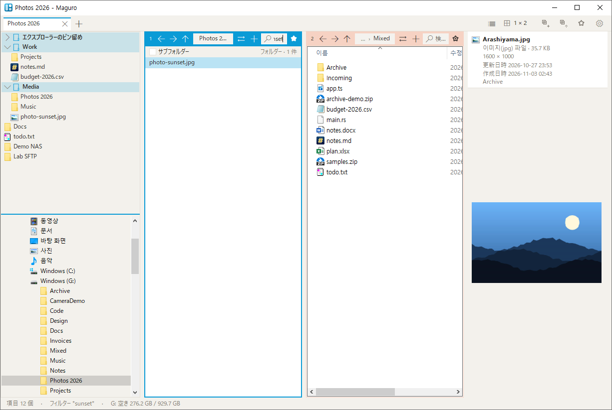
プレビューとクイックルック
キーは ショートカット に、一度だけ載せています。
F3 はクイックルックを開きます。スペースでプレビューがオンのとき（既定はオン）は、Space も同じです。名前を入力してから 1 秒以内のスペース、または韓国語や日本語の IME で文字を変換しているあいだのスペースは、その名前の一部のままです。Ctrl+Space と Shift+Space は、そのまま通します。
クイックルックは、一般的なカメラの RAW を含む画像、動画のサムネイル、音声用のカード、PDF のページ、Markdown、プレーン テキスト、コード、CSV と TSV の表、ZIP の一覧、HWP、HWPX、HWPT を表示します。Office、HTML、Outlook のメール、フォント、PDF は、ファイルが 10 MB 以下のとき、エクスプローラーと同じ仕組みである Windows のプレビュー ハンドラーも使えます。それより大きいその種のファイルは、待たずにカードを出します。描けないものは、事実を短くまとめたカードになり、アイコンだけにはなりません。
クイックルックでは、Enter が既定のアプリでファイルを開き、プレビューを閉じます。Shift+Enter または右クリックは、別のアプリで開くを使います。Esc、Space、または F3 は、ウィンドウを閉じます。F2 は、プレビュー中のファイルの名前を変更します。Del は削除します。Ctrl+ホイールは、10% から 800% まで拡大します。ドラッグで表示位置を動かせます。ホイールは、長いページをスクロールします。左と右は、常に前のファイルか次のファイルへ移ります。上と下はスクロールし、ページの端で新たに押すと、別のファイルへ移ります。ホイールが次のファイルへ移るのは、設定 → ペインと表示 → ホイールで次/前のファイルへ がオンのときだけです。そのオプションは、既定でオフです。
Alt+P は、右側のプレビュー ウィンドウの表示と非表示を切り替えます。アクティブなペインでフォーカスしているファイルを表示し、Windows のプレビュー ハンドラーがあればそれで描き、なければサムネイルか短い案内です。名前付きの .maguro ファイルは、このペインが開いているかどうかを変えません。スプリッターをダブルクリックすると、既定の幅に戻ります。
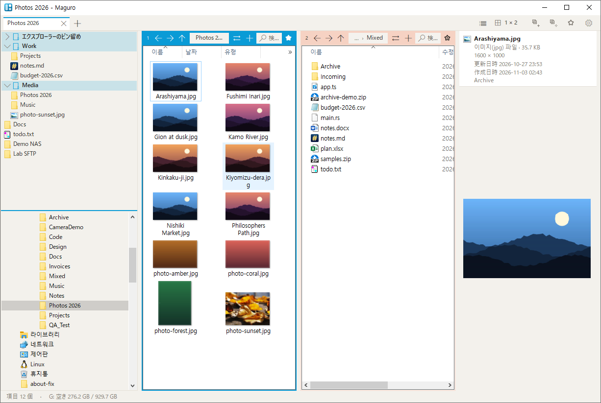
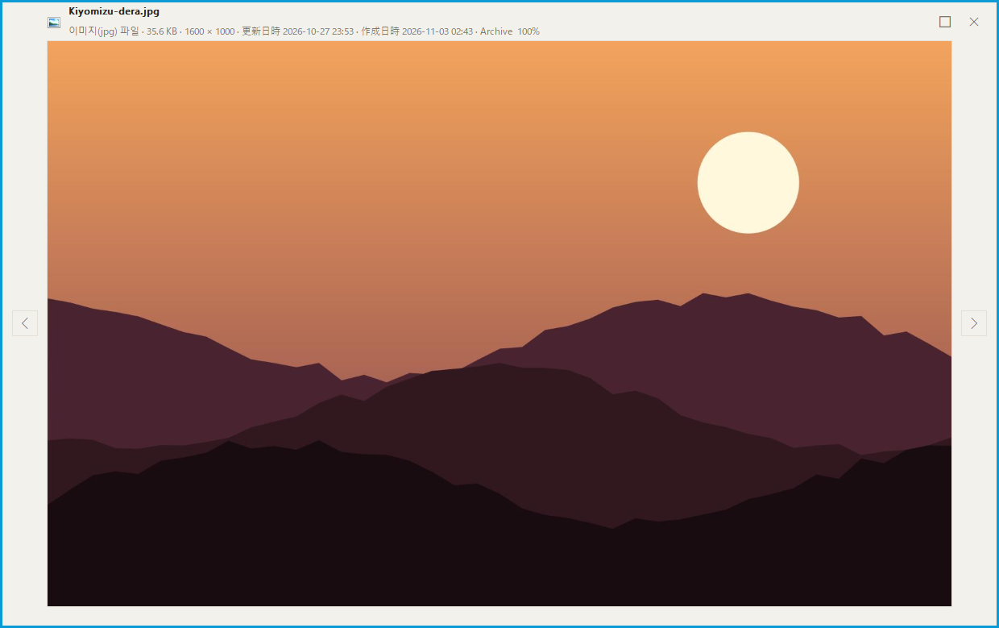
ファイル操作
キーは ショートカット に、一度だけ載せています。
コピー、切り取り、貼り付け、名前の変更（F2）、削除は、エクスプローラーに従います。F5 は、どこからでもアクティブなペインを再読み込みし、失敗したネットワーク フォルダーをもう一度試します。Ctrl+Shift+C は、フルパスをコピーします。
貼り付けとドラッグは IFileOperation、つまり Windows のコピー エンジンを使います。Windows の進行ウィンドウ、元に戻す、いつもの確認が出ます。Maguro は、通常のローカル コピーでは、そのダイアログを置き換えません。
Del は Windows の既定に従い、通常はごみ箱です。Shift+Del は、完全に削除します。設定 → ファイル操作では、Del を確認でき、既定の削除をごみ箱か完全削除にできます。確認は、既定でオンです。
ペインのあいだのドラッグは、コピーまたは移動です。既定は Windows の規則（同じドライブ = 移動）です。設定で、常にコピー、または常に確認にできます。常に確認は、コピー、移動、キャンセルを出します。フォルダーの行にドロップすると、ファイルはその中に入ります。
高速コピー（設定 → ファイル操作）は、既定でオフです。オンのとき、UNC パスや rclone のマウントを含むネットワーク パスに触れる貼り付けまたはドラッグは、robocopy と Maguro 自身の進行ウィンドウを使い、キャンセルできます。右クリックメニューの 高速貼り付け は、ローカル コピーでも常にその経路を使い、設定は見ません。ローカルからローカルへの貼り付けは、高速貼り付けを選ばない限り、IFileOperation のままです。ここでの robocopy は、宛先をミラーしたり、宛先を消去したりしません。移動はコピーのあと、すべての手順が成功してから、元だけを削除します。
クリップボードに画像があるときの Ctrl+V は、現在のフォルダーに PNG を保存します。
Ctrl+Shift+N または F7 は、フォルダーを作ります。Ctrl+Alt+N は、テキスト ファイルを作ります。新しいファイルの名前は、設定から来ます。
Ctrl+Shift+O は、選択した同じ名前を、ほかのペインに集めます。
Ctrl+Alt+C は、アクティブなペインのフォルダーを、次のペインと WinMerge で比較します。歯車メニューとファイル一覧では、選択した二つのファイル、または別のペインにある同じ名前のファイルを比較できます。WinMerge のパスは、設定 → 一般で指定します。空のパスは、自動検出です。右クリックメニューの WinMerge の行は、設定 → 右クリックメニュー項目でオンにするまで、オフのままです。
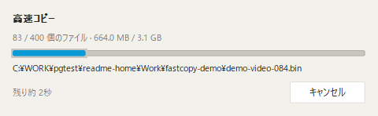
一括リネーム
Ctrl+Shift+R、または右クリックメニューの 一括リネーム は、選択に対する一括リネームのウィンドウを開きます。最近使ったファイルのペインでは開きません。ウィンドウは設定と同じスタイルです。平らなキャプション、カード、同じチェックボックスです。ルールは左、ライブ プレビューは右です。ルールを追加は右上、元に戻すは左下、「閉じる」と「名前の変更」は右下です。
ツール バーは、対象をファイル、フォルダー、または両方に絞り、拡張子の一覧でも絞ります。フォルダーは、拡張子の一覧を無視します。プリセットは %APPDATA%\Maguro\rename-presets から読み込み、そこへ保存します。maguro.json には入りません。
ルールは、上から下へ実行されます。各ルールには独自のチェックがあり、上下に移動できます。種類は次のとおりです。
置換は、検索と置換です。大文字と小文字の区別と、拡張子を含めるかを選べます。接頭辞と接尾辞は、拡張子ではなく語幹に付きます。大文字小文字は、小文字、大文字、単語の先頭、文頭のみで、拡張子を含めることもできます。拡張子は、新しい拡張子です。フォルダーはこのルールを飛ばします。連番は、開始、間隔、ゼロ埋め、位置（名前の前、名前の後、または文字の位置）です。カウンタは、その項目がバッチの何番目かに従い、飛ばした行は数えません。日付は、更新日時、作成日時、またはアクセス日時で、年、月、日、時、分、秒のパターンです。接頭辞、接尾辞、または語幹の置き換えとして置けます。EXIF は読みません。挿入、削除、トリムは、文字の編集です。空のトリムは、空白を取り除きます。正規表現は、Rust の正規表現です。$1 は最初のキャプチャです。空のパターンは何もしません。不正なパターンは、その行に示されます。
プレビューは、現在の名前、新しい名前、変わった範囲を示します。絞り込まれた項目は表示されたまま、対象外と印が付きます。適用できない行は、最初の問題を、この順で示します。空の名前、使えない文字、予約された名前、末尾の空白またはドット、長すぎる名前、バッチ内の重複、すでに存在する名前、不正なパターンです。
名前の変更は、変化があり、問題のない行だけに適用されます。名前の変更そのものは、元に戻せる IFileOperation を通ります。あとに実行した分が失敗すると、そのバッチで先に終わった分は巻き戻されます。Maguro は、独自の元に戻す履歴も、最大 20 バッチまで rename-undo.json に残します。元に戻すボタンと Ctrl+Z は、直前のバッチを戻し、もう無いファイルは飛ばします。名前の変更が成功したあと、ルール一覧は、空の置換ルールひとつに戻せます。
このウィンドウと設定のドロップダウンは、スタイル付きのコンボ ボックスです。テーマとスタイル付きコントロールを参照してください。
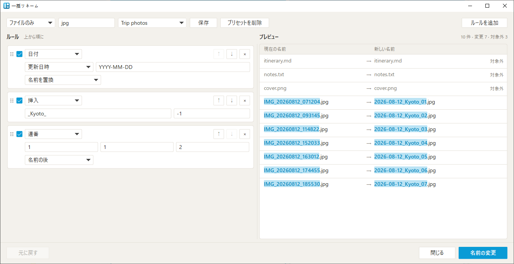
ファイルバスケット
Ctrl+Shift+B は、ファイルバスケットを切り替えます。常に手前に出る、小さなウィンドウです。ファイルやフォルダーをドロップするか、Ctrl+Alt+B でアクティブな選択を追加します。一覧が覚えるのはパスであり、コピーではありません。パスは .maguro のセッションではなく、maguro.json にあります。一覧から項目を外しても、元のファイルはその場所に残ります。
アクティブペインにコピーとアクティブペインへ移動は、ペインの貼り付けと同じエンジンである IFileOperation を使います。すべて選択はすべての行を選びます。クリックは 1 行、Ctrl+クリックは切り替え、Shift+クリックは基準の行からの範囲です。選択をペインまたはエクスプローラーへドラッグするとコピーです。Ctrl はコピー、Shift は移動です。Alt と Ctrl+Shift はショートカットを作りません。ペインへ落とすと、別スレッドで Windows の進行ウィンドウが出ます。エクスプローラーも同じドラッグを受け取ります。「取り除く」と「クリア」は、一覧だけを変えます。
無い元は、取り除くまで、見つからないと印を付けたまま一覧に残ります。コピーと移動は、無い項目を飛ばします。
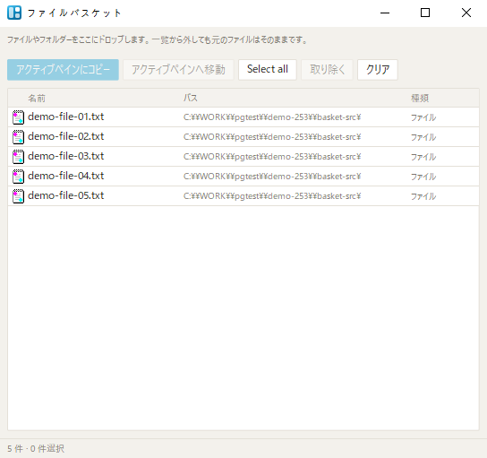
フォルダー監視
Ctrl+Shift+W は、フォルダー監視を開きます。フォルダーの追加、ファイルの追加、またはアクティブなペインの追加ができます。フォルダーの行は、サブフォルダーを含められます。各行は、設定と同じチェックを使います。
Maguro は、何かが変わったとき、かつ Maguro が実行中のときにだけ知らせます。トレイ アイコンも、バックグラウンド サービスもありません。一覧は maguro.json に保存されます。監視できるフォルダーとファイルは、合わせて最大 32 です。消えた監視中のファイルは、行を削除するまで、見つからないとして一覧に残ります。すでに監視しているフォルダーや、すでに監視しているファイルは、二重には追加されません。
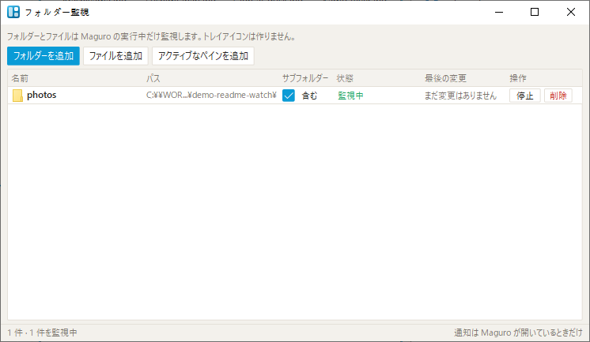
クリップボードのパス
Maguro の実行中は、Win+Alt+V がクリップボードのパスを開きます。別のウィンドウが前面でも開きます。フォルダーは新しいタブになり、ファイルは既定のアプリで開きます。
コピーしたファイル（CF_HDROP）は、プレーン テキストより優先されます。テキストは前後を削り、引用符を外し、file: URL を受け付け、環境変数を展開し、最初の行だけを使います。クリップボードにフォルダーもファイルも無ければ、Maguro はその旨を示します。パスが無ければ、その旨を示します。
ホットキーは、既定でオンです。設定 → 一般でオフにすると、登録が解除されます。設定 → ショートカットで、キーの組み合わせを変えられます。別のアプリのファイル ダイアログが前面にあるときは、ホットキーはタブを開かず、そのダイアログに渡されます。
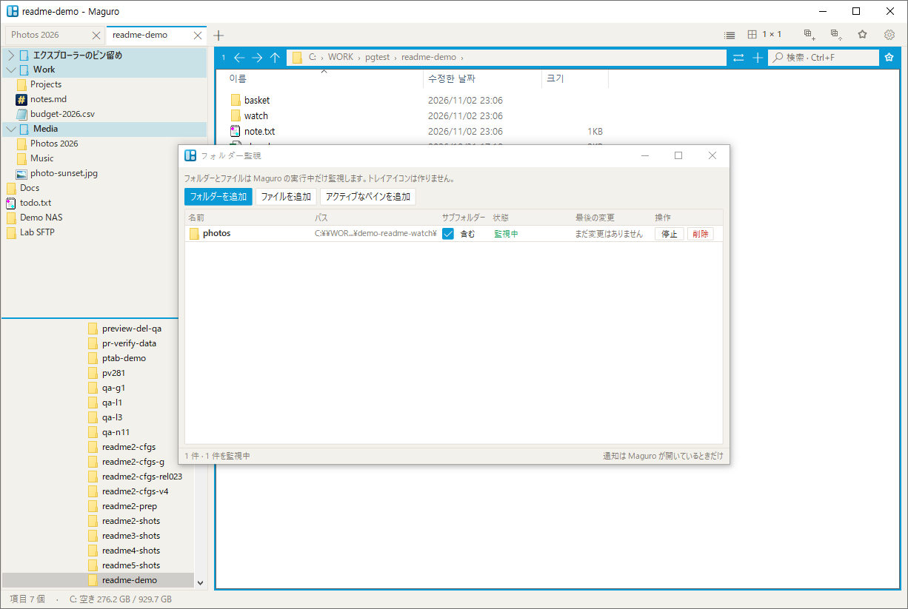
ワークスペース
ワークスペースは、名前付きのレイアウトを最大 9 つ保存します。各スロットは、名前と .maguro のスナップショットを持ちます。中身は、タブ、ペイン、フォルダーです。スロットは別ファイルではなく、maguro.json にあります。これらのキーは、グローバル ホットキーではありません。
Ctrl+Alt+1 から 9 は、スロットを開きます。Ctrl+Alt+Shift+1 から 9 は、現在のレイアウトをそのスロットに保存します。歯車メニュー → ワークスペースでは、保存、読み込み、名前の変更、消去ができます。空のスロットは、短いメッセージを出します。読み込むと、現在のタブが置き換わります。Maguro が先に尋ねるのは、開く前に確認がオンのときだけです。
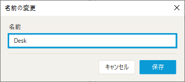
サーバー接続
お気に入りパネル、またはグループを右クリックし、サーバー接続を追加… を選びます。SMB、WebDAV、SFTP、FTP が、開く、コピー、プレビューできるフォルダーとして現れます。
種類を選び、表示名、アドレス、ポート、リモート パス、ユーザー名、パスワードを入力します。パスワードは Windows 資格情報マネージャーに入ります。maguro.json には、決して書き込まれません。
SMB は、Windows の共有を使います。WebDAV は、HTTPS が必要なことがあります。FTP は、入力したホストとポートを使います。SFTP と FTP は、rclone と WinFsp でマウントされ、そのあと、プレビュー、コンテキスト メニュー、高速コピーを含め、ほかのフォルダーと同じようにブラウズできます。その種の接続を追加するとき、Maguro は rclone と WinFsp のインストールを尋ねることができます。
終わったら、切断します。壊れた共有は、ネットワーク フォルダーのサイズがオンでない限り、フォルダー サイズの走査を飛ばします。ネットワーク フォルダーが開けないときは、F5 を押します。
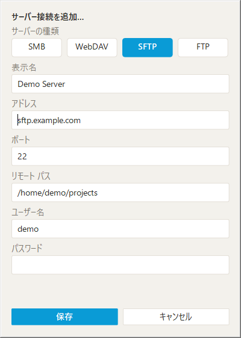
Office ファイル
読み取り専用で開くは、選択した項目がすべて .xls、.xlsx、.xlsm、または .csv のときに出ます。.xlsb、フォルダー、混在した選択では出ません。Maguro は、そのパスで excel.exe /r を起動するので、Excel はブックを読み取り専用で開き、ほかの人はまだ保存できます。
A1・100%に整えるは、選択した項目がすべて .xlsx または .xlsm のときに出ます。ダイアログは四つを提示し、そのセッションのあいだ覚えます。選択を A1 に移す、ズームを 100% にする、最初のシートを選ぶ、.bak.xlsx のバックアップを作る、の四つです。別のプログラムが開いているファイルは飛ばされます。ロックされたコピーの報告と同じです。要約は、終わったものと飛ばしたものの数を数えます。
Office ファイルのプレビューは、別です。プレビューとクイックルックを参照してください。
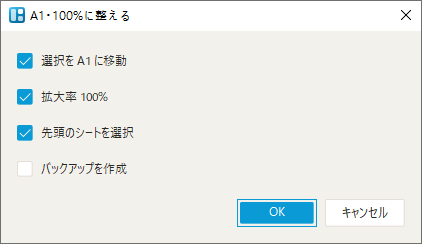
テーマとスタイル付きコントロール
設定 → 外観は、テーマ、アクセント、ツール バー、ドライブ ボタン、ステータス バーを設定します。テーマは、Windows の設定に従う、ライト、ダークです。ライトとダークは、それぞれ独自のアクセントを保ちます。両方の既定のアクセントは、セルリアン #0A9BD6 です。六つの色見本と、カスタム…が提示されます。廃止されたミントのアクセント #2EC4A6 が残っている古い設定ファイルは、次に読み込まれたとき、セルリアンへ移されます。ミントは選択肢ではありません。
テーマを変えたあと、フォルダー一覧は、次に Maguro が起動したときに新しい色を受け取ります。ウィンドウのほかの部分は、すぐに更新されます。
設定と一括リネームのすべてのドロップダウンは、スタイル付きのコンボです。今もネイティブのコンボ ボックスなので、F4、Alt+Down、文字入力による選択、マウス ホイールは、今までどおりに動きます。閉じた面は、隣のテキスト欄に合います。カードの塗り、極細の境界、少し丸い角、塗りつぶした三角です。ライトテーマで有効な矢印は #444444 なので、白い面の上で読めます。ダークテーマの矢印は、テーマの文字色を使います。フォーカス、ホバー、開いた一覧は、その境界をセルリアンで描きます。一覧で選択された行は、セルリアンに白い文字です。無効なコンボと、オフにしたリネームのルールは、薄い文字色を使います。
このヘルプ サイトは、ライトだけです。アプリのテーマには従いません。
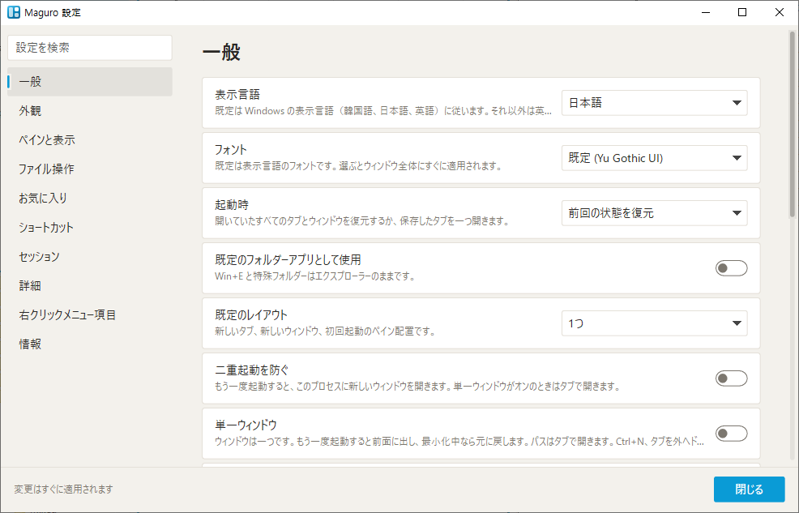
設定
Ctrl+, は、設定を開きます。検索ボックスは、タイトルまたは説明が一致するページ、カード、ショートカットへ移ります。変更は、すぐに適用されます。ファイルは %APPDATA%\Maguro\maguro.json、または exe の隣に portable.txt があるときは、exe の隣の maguro.json です。ファイルが無いときは、既定から始まります。書き込みに失敗すると、5 秒後にもう一度試します。読めないファイルは、そのままにします。未知のキーは残します。キーの説明は docs/settings.md にあります。
一般。 表示言語（自動は、言語ファイルが一致するとき Windows に従い、そうでなければ英語です）。フォントは、ウィンドウ全体に適用されます。フォント サイズはありません。起動時は、前回の状態を復元する、保存したセッションをひとつ開く、または既定のレイアウトです。既定のフォルダーアプリとして使用は、ファイル システムのフォルダーとドライブだけに Maguro を登録します。Win+E、タスク バー、shell: などの仮想フォルダーは、エクスプローラーのままです。既定のレイアウト。単一インスタンス。単一ウィンドウモード。開くダイアログと保存ダイアログのフォルダー。クリップボードのパスのホットキー。空白のダブルクリックで上のフォルダー。Everything。WinMerge のパス。
外観。 テーマ、アクセント、ツール バー、ドライブ ボタン、ステータス バー。
ペインと表示。 新しいペインの既定の表示。フォルダーごとの表示の記憶は、設定ファイルの隣の folder-views.json に入り、並べ替え、列、表示モード、アイコン サイズ、グループ化を覚えます。すべてのフォルダーの既定の表示は、アクティブなペインから取ります。加えて、「このフォルダーの表示を消す」と「すべて消す」があります。新しいペインの開始フォルダーは、PC、デスクトップ、または選んだフォルダーです。隠しファイル。ファイルの拡張子。これは Windows 自身の設定で、エクスプローラーが使うものと同じです。フォルダー サイズ。ネットワーク フォルダー向けのオプションを含み、それは既定でオフです。左のパネルと、お気に入りとツリーのどちらを上にするか。アクティブなペインの枠を強調。プレビュー ウィンドウ。スペースでプレビュー。ホイールで次/前のファイルへ。
ファイル操作。 通常の貼り付けの経路は、常に Windows のコピー ウィンドウです。ネットワーク フォルダーの高速コピー。削除の確認。既定の削除方法。新しいファイル名。ドラッグ アンド ドロップの既定は、Windows の規則、常にコピー、または常に確認です。
お気に入り。 グループ、フォルダー、ファイルのツリーです。
ショートカット。 行をダブルクリックするか、変更を押してから、新しいショートカットを押します。Esc は取り消します。衝突しているキーは、入れ替えできます。「戻す」は、その行を既定に戻します。変えたキーは、次のキーから適用され、再起動は要りません。保存されるのは、既定と異なるキーだけです。
セッション。 セッション フォルダー、終了時に自動保存（既定はオフ）、緑の未保存の点（既定はオン）です。
詳細。 起動時に GitHub で、新しいリリースを確認します。アップデーターがダウンロードするのは、maguro.exe と maguro.exe.sha256 だけです。zip だけのリリースは、展開しません。設定ファイルの場所、Maguro の JSON または Maguro の ini のエクスポートとインポート。すべての設定を初期化は、設定を戻します。レイアウト、フォルダー、お気に入りは残ります。ブロックするシェル拡張 DLL の名前。
右クリックメニュー項目。 他社のハンドラー、メニューの形、パッケージ コマンド、WinMerge です。右クリックメニューを参照してください。
情報。 バージョンと、クレジットです。Maguro は、efww による efww/grids のフォークです。
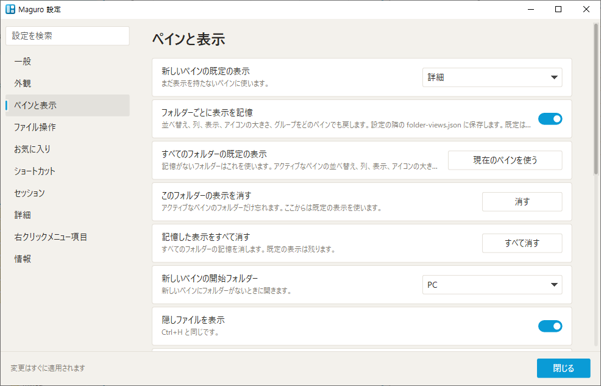
Win+Shift+E とその他の操作
キーは ショートカット に、一度だけ載せています。
Win+Shift+E は、ホットキーの設定がオンのとき（既定はオン）、Maguro の実行中はグローバルです。Maguro を前面に出し、ファイル一覧にフォーカスします。Maguro のダイアログが所有者を無効にしているときは、代わりにそのダイアログが前面に出ます。Maguro がすでに前面のときにもう一度押すと、単一ウィンドウモードがオンなら新しいタブが開き、そのモードがオフなら Maguro は最小化します。このキーは「既定のフォルダーアプリとして使用」ではなく、Ctrl+Shift+E でもありません。Ctrl+Shift+E は、左のパネルの表示と非表示だけで、しかも Maguro にフォーカスがあるときだけです。Win+E は、エクスプローラーのままです。
Ctrl+Alt+G は、フォルダーを、別のアプリの開くダイアログまたは保存ダイアログへ移します。このキーが登録されるのは、そのようなダイアログ（#32770）が前面にあるとき、かつ設定がオンのときだけです。Maguro で開いているフォルダーを一覧し、選んだものへダイアログを移動します。仮想フォルダーは飛ばします。Win+Shift+E は、変わりません。
F6 と Shift+F6 は、フォーカスを移します。Ctrl+H は、隠しファイルの表示を切り替えます。Num+、または Ctrl+Shift+A は、パターンで選択します。Num− は、パターンで選択解除します。Num* は、選択を反転します。Alt+Left、Alt+Right、Alt+Up は、戻る、進む、上のフォルダーです。Alt+Down は、最近のフォルダーを開きます。Ctrl+Alt+R は、最近使ったファイルを、新しい順に開きます。Ctrl+Enter は、選択した最近のファイルをそのフォルダーに表示し、しかもそのペインの中だけです。ほかの場所では、そのキーはそのまま渡されます。
ショートカット
これらは既定です。設定 → ショートカットで、どれでも変えられます。アプリ内の一覧（Ctrl+/）は、再起動なしで、変更にすぐ従います。このページに載るのは、0.2.3 に同梱される既定です。
Win+Shift+E と Win+Alt+V は、Maguro が実行しているあいだ、ずっと登録されます。Ctrl+Alt+G は、別のアプリの開くダイアログまたは保存ダイアログが前面にあるときだけ登録されます。ワークスペースのキーは、グローバルではありません。ペイン タブのキーは、フォーカスがペインにあるときだけ動きます。
| キー | 操作 |
|---|---|
| タブ | |
| Ctrl+T | 新しいタブ |
| Ctrl+W | タブを閉じる |
| Ctrl+Tab | 次のタブ |
| Ctrl+Shift+Tab | 前のタブ |
| Ctrl+Shift+T | 閉じたタブを開き直す |
| Ctrl+Alt+K | タブを複製 |
| Ctrl+Shift+L | タブ一覧 |
| ペイン | |
| Ctrl+Page Down | 次のペイン |
| Ctrl+Page Up | 前のペイン |
| Ctrl+1…9 | ペイン 1–9 へ移動 |
| ペイン タブ | |
| Ctrl+Alt+T | 新しいペイン タブ |
| Ctrl+Alt+W | ペイン タブを閉じる |
| Ctrl+Alt+Page Down | 次のペイン タブ |
| Ctrl+Alt+Page Up | 前のペイン タブ |
| 移動 | |
| Alt+Shift+← | 左のペイン |
| Alt+Shift+→ | 右のペイン |
| Alt+Shift+↑ | 上のペイン |
| Alt+Shift+↓ | 下のペイン |
| Ctrl+Alt+Shift+← | 左のペインと入れ替え |
| Ctrl+Alt+Shift+→ | 右のペインと入れ替え |
| Ctrl+Alt+Shift+↑ | 上のペインと入れ替え |
| Ctrl+Alt+Shift+↓ | 下のペインと入れ替え |
| Alt+← | 戻る |
| Alt+→ | 進む |
| Alt+↑ | 上のフォルダー |
| Alt+↓ | 最近のフォルダー |
| Ctrl+L / Alt+D / F4 | アドレス バー |
| 表示 | |
| Ctrl+F | このフォルダーを検索 |
| F3 | クイックルック |
| Alt+P | プレビュー ウィンドウ |
| F6 | 次のフォーカス |
| Shift+F6 | 前のフォーカス |
| Ctrl+H | 隠しファイルを表示 |
| Ctrl+Shift+E | 左のパネルを表示 |
| Ctrl+Shift+O | エクスプローラーのフォルダーを開く |
| Ctrl+Alt+R | 最近使ったファイル |
| Ctrl+Shift+M | ペインを最大化 / 元に戻す |
| ファイル | |
| Ctrl+Shift+C | フルパスをコピー |
| Ctrl+Shift+R | 一括リネーム |
| Num+ / Ctrl+Shift+A | パターンで選択 |
| Num− | パターンで選択解除 |
| Num* | 選択を反転 |
| Ctrl+Alt+N | 新しいテキスト ファイル |
| Ctrl+Shift+N | 新しいフォルダー |
| F7 | このペインに新しいフォルダー |
| Ctrl+Alt+C | WinMerge でフォルダーを比較 |
| Ctrl+Shift+B | ファイルバスケット |
| Ctrl+Alt+B | 選択をバスケットに追加 |
| Ctrl+Enter | フォルダーに表示（最近使ったファイルのみ） |
| セッション | |
| Ctrl+S | このタブを保存 |
| ワークスペース | |
| Ctrl+Alt+1…9 | ワークスペースを開く |
| Ctrl+Alt+Shift+1…9 | ワークスペースを保存 |
| お気に入り | |
| Ctrl+B | お気に入り |
| ヘルプ | |
| Ctrl+, | 設定 |
| F1 | ブラウザーでこのヘルプを開く |
| Ctrl+/ | ショートカット一覧 |
| ウィンドウ | |
| Win+Shift+E | Maguro を前面に |
| Ctrl+Alt+G | ファイル ダイアログのフォルダーへ移動 |
| Win+Alt+V | クリップボードのパスを開く |
| Ctrl+N | 新しいウィンドウ |
| Ctrl+Shift+W | フォルダー監視 |
Maguro が割り当て直さないエクスプローラーのキーは、F2 の名前の変更、Del と Shift+Del、Ctrl+C、Ctrl+X、Ctrl+V、F5 の更新です。
マウスでは、レイアウト ボタン、アドレス バーの山括弧、スプリッターのダブルクリック、色のためのペイン ヘッダーの右クリック、閉じるためのペイン タブの中クリック、入れ替えのためのペイン番号のドラッグ、Ctrl を押したときは複製です。
言語
英語はプログラムに組み込まれており、ほかの言語が無いときの戻り先です。韓国語、日本語、フランス語、ドイツ語は、lang/lang.ko.ini、lang/lang.ja.ini、lang/lang.fr.ini、lang/lang.de.ini として同梱されます。初回起動時と、バージョンが変わるたびに、Maguro はこの四つのファイルを、設定ファイルの隣の lang フォルダーへ書き込みます。この四つは、常に上書きします。lang.xx.user.ini や、自分で追加したほかの lang.xx.ini は、書き込みも、上書きも、削除もしません。
ファイルは UTF-8 です。先頭の BOM は無視されます。行は key = text です。[meta] の name は、言語一覧のラベルです。[meta] の font は、任意の UI フォントです。無いキーは、英語のテキストを使います。lang.xx.user.ini はその上に読み込まれ、そちらが優先されます。
自動は、一致するファイルがあるとき Windows の表示言語に従い、なければ英語です。各ペインの中のエクスプローラー部分、たとえば列名や、シェル自身の右クリック項目は、Windows の表示言語に従います。フォントの既定は、その言語の書体です。韓国語は Malgun Gothic、日本語は Yu Gothic UI、それ以外は Segoe UI、またはファイルに書かれた書体です。選んだ書体は、ウィンドウ全体に一度に適用されます。
トラブルシューティング
フォルダーが開きません。ペインをクリックして、F5 を押してください。F5 はアクティブなペインを再読み込みし、失敗したネットワーク フォルダーをもう一度試します。
サブフォルダー検索が、何も見つけません。Everything をインストールして起動し、設定 → 一般を確認してください。Everything が無いとき、Maguro はディスクをたどります。それは、サブフォルダーにチェックを入れてからです。
ネットワークのコピーが遅い、または Maguro の進行ウィンドウを期待していました。ネットワーク フォルダーの高速コピーをオンにするか、高速貼り付けを使ってください。オフのときは、Windows のコピー ウィンドウを使います。高速コピーは、高速貼り付けを選ばない限り、純粋にローカルなコピーでは動きません。
WinMerge が起動しません。設定 → 一般で、パスを指定してください。フォルダーの比較には、本物のフォルダーが必要です。右クリックの WinMerge コマンドは、有効にするまで隠れたままです。
SFTP が失敗します。尋ねられたら rclone と WinFsp をインストールし、ホスト、ポート、ユーザー、パスワードを確認してください。WebDAV は、HTTPS が必要なことがあります。SMB は、Windows の共有を使います。FTP は、接続のホストとポートを使います。
ウィンドウのテーマは変わったのに、フォルダー一覧は変わりません。Maguro を再起動してください。一覧は、起動時にテーマを受け取ります。
前回、Maguro が予期せず閉じました。次の起動では、レポートがどこに書かれたかを示します。場所は、設定ファイルの隣の crashes フォルダーです。そのフォルダーを開くことも提案します。レポートには、バージョン、スレッド、例外、障害を起こしたモジュール、最後のフォルダー、読み込まれたシェル拡張 DLL が含まれます。
二度目の起動が、何もしないように見えます。単一インスタンスまたは単一ウィンドウモードがオンなので、最初のウィンドウが残り、パスはタブとして届きます。インストールできる更新は maguro.exe を置き換えて再起動します。zip だけのリリースは、展開しません。更新ウィンドウがそう言うときは、自分で exe を置き換えてください。
Maguro を管理者として実行しないでください。PowerToys のマウス十字線のようなツールは、昇格したウィンドウの上ではカーソルを追えません（UIPI）。Maguro は通常どおり実行するか、両方を管理者として実行してください。
SmartScreen は、exe がコード署名されていないため、初回に警告します。詳細情報 → 実行 を選んでください。
古い .grids、.qdr、grids.ini は開きません。現在のウィンドウから、新しい .maguro セッションを保存してください。